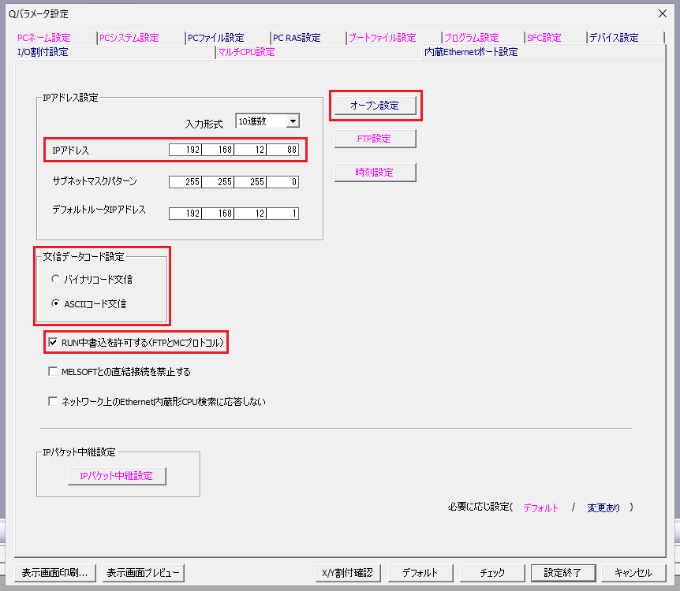
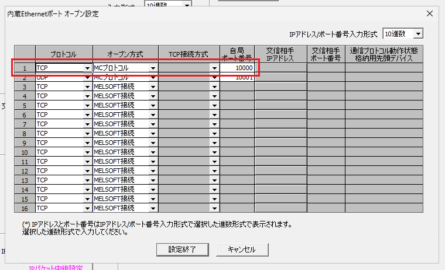

PLCパラメータ設定
内蔵Ethernet使用時
 | 設定項目 | 説明 | Mcpxのパラメータ |
|---|---|---|
| IPアドレス | PLCのIPアドレスを指定します。 | コンストラクタのipにPLCのIPを指定します。 |
| 交信データコード | バイナリコード交信、ASCIIコード交信を指定します。 |
ASCIIコード交信の場合にコンストラクタのisAsciiにtrueを指定します。 |
| RUN中書込を許可する | デバイスに書込みを行う場合に有効にします。 | - |
| プロトコル | TCP、UDPを指定します。 |
UDPの場合にコンストラクタのisUdpにtrueを指定します。 |
| オープン方式 | MCプロトコルを指定します。 |
- |
| 自局ポート番号 | 通信を行うポート番号（1025～4999, 5010～65534の範囲）を指定します。 | コンストラクタのportにPLCのポート番号を指定します。 |